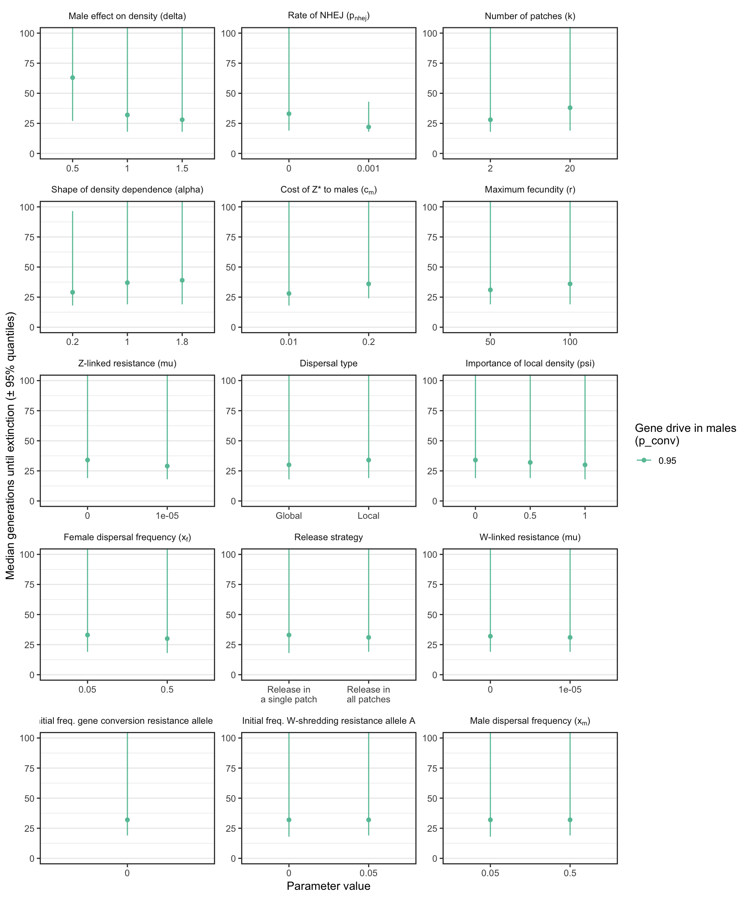

Plotting the simulation results
Last updated: 2019-02-08
workflowr checks: (Click a bullet for more information)-
‚úñ R Markdown file: uncommitted changes
The R Markdown file has unstaged changes. To know which version of the R Markdown file created these results, you’ll want to first commit it to the Git repo. If you’re still working on the analysis, you can ignore this warning. When you’re finished, you can runwflow_publishto commit the R Markdown file and build the HTML. -
✔ Environment: empty
Great job! The global environment was empty. Objects defined in the global environment can affect the analysis in your R Markdown file in unknown ways. For reproduciblity it’s best to always run the code in an empty environment.
-
✔ Seed:
set.seed(20180716)The command
set.seed(20180716)was run prior to running the code in the R Markdown file. Setting a seed ensures that any results that rely on randomness, e.g. subsampling or permutations, are reproducible. -
✔ Session information: recorded
Great job! Recording the operating system, R version, and package versions is critical for reproducibility.
-
Great! You are using Git for version control. Tracking code development and connecting the code version to the results is critical for reproducibility. The version displayed above was the version of the Git repository at the time these results were generated.✔ Repository version: b22c9d8
Note that you need to be careful to ensure that all relevant files for the analysis have been committed to Git prior to generating the results (you can usewflow_publishorwflow_git_commit). workflowr only checks the R Markdown file, but you know if there are other scripts or data files that it depends on. Below is the status of the Git repository when the results were generated:
Note that any generated files, e.g. HTML, png, CSS, etc., are not included in this status report because it is ok for generated content to have uncommitted changes.Ignored files: Ignored: .DS_Store Ignored: .Rhistory Ignored: .Rproj.user/ Ignored: data/sim_results/ Ignored: docs/figure/ Unstaged changes: Modified: analysis/plot_model.Rmd Modified: combine_results_files.R Modified: figures/figure3.pdf Modified: manuscript/shredder_manuscript.Rmd
Expand here to see past versions:
| File | Version | Author | Date | Message |
|---|---|---|---|---|
| Rmd | 4fdad66 | Luke Holman | 2019-02-06 | Fixed up plots |
| html | 4fdad66 | Luke Holman | 2019-02-06 | Fixed up plots |
| Rmd | 3b6cc7a | Luke Holman | 2019-02-05 | Making graphs, fixed combine file |
| Rmd | 76f3d92 | Luke Holman | 2019-01-09 | added line to remove cost_A mistake |
| Rmd | 8322107 | Luke Holman | 2019-01-08 | Fix annoying costA+B typo |
| Rmd | 09b03be | Luke Holman | 2018-12-29 | tweaks on desktop |
| Rmd | 15558a7 | Luke Holman | 2018-12-23 | Commit from desktop |
| Rmd | 84db6b2 | Luke Holman | 2018-12-03 | No procedure for checking completed runs |
| Rmd | 2efe487 | Luke Holman | 2018-11-30 | New script to combine files and some writing |
| Rmd | 79a4634 | Luke Holman | 2018-11-21 | Change counting of old parameters |
| Rmd | ee185ed | Luke Holman | 2018-11-19 | Extra params |
| Rmd | de9e0ff | Luke Holman | 2018-11-13 | Added slurm capacity |
| Rmd | 99e93c7 | Luke Holman | 2018-11-03 | Many bug fixes with density dependence |
| html | 99e93c7 | Luke Holman | 2018-11-03 | Many bug fixes with density dependence |
Warning: package 'future' was built under R version 3.5.2Load packages and results
packages <- c("dplyr", "purrr", "ggplot2", "reshape2", "Cairo", "knitr",
"latex2exp", "pander", "grid", "gridExtra", "ggthemes",
"readr", "tibble", "biglm", "kableExtra")
shh <- suppressMessages(lapply(packages, library, character.only = TRUE, quietly = TRUE))
if(!file.exists("data/all_results.rds")){
results <- lapply(list.files(path = "data", pattern = "results_", full.names = TRUE), readRDS) %>%
do.call("rbind", .) %>%
filter(cost_A == 0 & cost_B == 0)
saveRDS(results, file = "data/all_results.rds")
} else results <- read_rds("data/all_results.rds")
results$went_extinct <- ifelse(results$outcome == "Population extinct", 1, 0)
results$migration_type[results$migration_type == "local"] <- "Local"
results$migration_type[results$migration_type == "global"] <- "Global"
find_variable_parameters <- function(dat){
dat %>%
select(-id, -realisations, -generation_extinct, -generation_Zd_extinct,
-generation_W_extinct, -generation_Zd_fixed, -outcome, -went_extinct,
-mating_table, -initial_Wr, -initial_Zr) %>%
sapply(function(x) length(unique(x))) %>%
keep(~.x > 1) %>% names()
}
variable_parameters <- find_variable_parameters(results)
combinations <- apply(combn(variable_parameters, 2), 2, paste0, collapse = " x ")
# Make a data frame to conver R-friendly names to figure-friendly names
nice_names <- data.frame(original = c(variable_parameters, combinations),
new = gsub("_", " ", c(variable_parameters, combinations)),
stringsAsFactors = FALSE) %>%
mutate(
new = gsub("rel", "Rel", new),
new = gsub("W shredding rate", "Gene drive in females ($p_{shred}$)", new),
new = gsub("Z conversion rate", "Gene drive in males ($p_{conv}$)", new),
new = gsub("Zr creation rate", "Rate of NHEJ ($p_{nhej}$)", new),
new = gsub("Zr mutation rate", "Z-linked resistance ($\\mu{_Z}$)", new),
new = gsub("Wr mutation rate", "W-linked resistance ($\\mu{_W}$)", new),
new = gsub("cost Zdrive female", "Cost of Z* to females ($c_f$)", new),
new = gsub("cost Zdrive male", "Cost of Z* to males ($c_m$)", new),
new = gsub("male migration prob", "Male dispersal frequency", new),
new = gsub("feMale dispersal frequency", "Female dispersal frequency (xf)", new),
new = gsub("Male dispersal frequency", "Male dispersal frequency (xm)", new),
new = gsub("xm", "$x_m$", new),
new = gsub("xf", "$x_f$", new),
new = gsub("migration type", "Dispersal type", new),
new = gsub("n patches", "Number of patches ($k$)", new),
new = gsub("softness", "Importance of local density ($\\psi$)", new),
new = gsub("male weighting", "Male effect on density ($\\delta$)", new),
new = gsub("density dependence shape", "Shape of density dependence ($\\alpha$)", new),
new = gsub("max fecundity", "Maximum fecundity ($r$)", new),
new = gsub("initial A", "Intial freq. W-shredding resistance allele A", new),
new = gsub("initial B", "Intial freq. gene conversion resistance allele B", new),
new = as.character(TeX(new))) %>%
mutate(new = gsub("mu", "\\mu", new))
# Sort the results between those that model a W-shredder, versus those that model a Z* that sterilisies females
W_shredder <- results %>% filter(cost_Zdrive_female != 1)
female_sterilising <- results %>% filter(cost_Zdrive_female == 1)
rm(results)
variable_parameters_W_shredder <- find_variable_parameters(W_shredder)
variable_parameters_female_sterilising <- find_variable_parameters(female_sterilising)Table showing the frequencies of each possible outcome
Table S1: The number and percentage of simulation runs that ended with the five possible outcomes, for the subset of simulation runs focusing on a W-shredder gene drive.
make_tally_table <- function(dat){
outcomes <- dat$outcome %>% table() %>% melt() %>% arrange(-value) %>% mutate(p = round(100 * value / sum(value), 1))
names(outcomes) <- c("Outcome", "Number of simulations", "%")
outcomes %>% mutate(Outcome = gsub("without", "without causing", Outcome),
Outcome = gsub("n extinct", "n went extinct", Outcome),
Outcome = gsub("d extinct", "d went extinct", Outcome)) %>% pander()
}
make_tally_table(W_shredder)| Outcome | Number of simulations | % |
|---|---|---|
| Zd fixed without causing extinction | 840913 | 36.3 |
| Population went extinct | 660783 | 28.5 |
| Zd went extinct | 425005 | 18.3 |
| Wr fixed | 316890 | 13.7 |
| Timer expired | 72787 | 3.1 |
Table S2: The number and percentage of simulation runs that ended with the five possible outcomes, for the subset of simulation runs focusing on a female-sterilising Z-linked gene drive.
make_tally_table(female_sterilising)| Outcome | Number of simulations | % |
|---|---|---|
| Zd went extinct | 271104 | 80.9 |
| Timer expired | 44940 | 13.4 |
| Population went extinct | 12932 | 3.9 |
| Wr fixed | 6087 | 1.8 |
Make Figure 1
a <- read_rds("data/allele_freqs_1.rds")
plot_run <- function(){
get_data <- function(model_id, allele_freqs_list, result_df, label){
df <- pluck_allele_freqs(model_id, allele_freqs_list)
alleles_to_plot <- group_by(df, allele) %>%
summarise(uniques = length(unique(frequency))) %>%
filter(uniques > 1) %>% # Don't plot alleles that stay at 0 whole time
pull(allele)
alleles_to_plot <- c(alleles_to_plot, "N")
df <- df[df$allele %in% alleles_to_plot, ]
df$frequency[df$allele == "N"] <- df$frequency[df$allele == "N"] /
max(df$frequency[df$allele == "N"])
# paras <- result_df %>% mutate(id = as.character(id)) %>% filter(id == model_id)
# last_generation <- tail(df,12) %>% select(allele, frequency)
# print(paras); print(last_generation)
df %>% mutate(facet = label,
allele = replace(allele, allele == "Zd", "Z*"),
allele = replace(allele, allele == "females", "Females"))
}
rbind(
get_data("10024119427447", a, W_shredder, "A. Population extinction"),
get_data("1002596940286", a, W_shredder, "B. Failure to cause extinction"),
get_data("10024112958792", a, W_shredder, "C. Resistance prevents extinction")) %>%
ggplot(aes(x = generation, y = frequency, colour = allele, group = allele)) +
geom_vline(xintercept = 50, linetype = 2, colour = "grey10", size = 0.9) +
geom_line(size = 0.9, alpha = 0.9) +
facet_wrap(~facet, scales = "free_x") +
theme_hc() + scale_colour_hc(name = "") +
theme(strip.text = element_text(hjust = 0),
strip.background = element_rect(fill = "grey90"),
legend.position = "top",
axis.ticks.y = element_blank()) +
xlab("Generation") + ylab("Frequency")
}
fig1 <- plot_run()
rm(a)
fig1
Figure 1: Three illustrative runs of the simulation, showing evolution in response to the introduction of XX males carrying a W-shredder at Generation 50 (marked by the dashed line). In panel A, the driving Z* allele fixed very quickly, causing population extinction as the number of females dropped to zero. In panel B, the Z* allele spread up until the point that its fitness costs began to negate its transmission advantage, causing the population to halve in size but not to go extinct. In panel C, the Z* allele invaded, selecting for the resistance alleles A and Zr allele, and causing the Z* allele to reverse course and go extinct. The population size N is shown as a fraction of its maximum value of 10,000. Table SX gives the parameter space used for these three runs.
tabl <- t(rbind(
data.frame(Panel = "A", W_shredder %>% filter(id == "10024119427447")),
data.frame(Panel = "B", W_shredder %>% filter(id == "1002596940286")),
data.frame(Panel = "C", W_shredder %>% filter(id == "10024112958792"))) %>%
select(release_strategy, W_shredding_rate,
Z_conversion_rate, Zr_creation_rate, Zr_mutation_rate,
Wr_mutation_rate, cost_Zdrive_female, cost_Zdrive_male,
male_migration_prob, female_migration_prob,
migration_type, n_patches, softness, male_weighting,
density_dependence_shape, max_fecundity, initial_A, initial_B))
nice_names2 <- data.frame(original = variable_parameters,
new = gsub("_", " ", variable_parameters),
stringsAsFactors = FALSE) %>%
mutate(
new = gsub("rel", "Rel", new),
new = gsub("W shredding rate", "Gene drive in females (p_shred)", new),
new = gsub("Z conversion rate", "Gene drive in males (p_conv)", new),
new = gsub("Zr creation rate", "Rate of NHEJ (p_nhej)", new),
new = gsub("Zr mutation rate", "Z-linked resistance (μ_Z)", new),
new = gsub("Wr mutation rate", "W-linked resistance (μ_W)", new),
new = gsub("cost Zdrive female", "Cost of Z* to females (c_f)", new),
new = gsub("cost Zdrive male", "Cost of Z* to males (c_m)", new),
new = gsub("male migration prob", "Male dispersal frequency", new),
new = gsub("feMale dispersal frequency", "Female dispersal frequency (x_f)", new),
new = gsub("Male dispersal frequency", "Male dispersal frequency (x_m)", new),
new = gsub("migration type", "Dispersal type", new),
new = gsub("n patches", "Number of patches (k)", new),
new = gsub("softness", "Importance of local density (ψ)", new),
new = gsub("male weighting", "Male effect on density (ùõø)", new),
new = gsub("density dependence shape", "Shape of density dependence (α)", new),
new = gsub("max fecundity", "Maximum fecundity (r)", new),
new = gsub("initial A", "Intial freq. W-shredding resistance allele A", new),
new = gsub("initial B", "Intial freq. gene conversion resistance allele B", new))
rownames(tabl) <- nice_names2$new[match(rownames(tabl), nice_names2$original)]
rownames(tabl) <- gsub("[.]", "", rownames(tabl))
colnames(tabl) <- c("Panel A", "Panel B", "Panel C")Table S3: List of the parameter values used to generate the simulation runs shown in Figure 1.
as.data.frame(tabl) %>% kable(format = "html", escape = FALSE) %>% kable_styling()| Panel A | Panel B | Panel C | |
|---|---|---|---|
| Release strategy | one_patch | one_patch | all_patches |
| Gene drive in females (p_shred) | 1 | 1 | 1 |
| Gene drive in males (p_conv) | 0.95 | 0.00 | 0.50 |
| Rate of NHEJ (p_nhej) | 0.01 | 0.00 | 0.10 |
| Z-linked resistance (μ_Z) | 0 | 0 | 0 |
| W-linked resistance (μ_W) | 0 | 0 | 0 |
| Cost of Z* to females (c_f) | 0.01 | 0.50 | 0.50 |
| Cost of Z* to males (c_m) | 0.01 | 0.20 | 0.01 |
| Male dispersal frequency (x_m) | 0.50 | 0.05 | 0.05 |
| Female dispersal frequency (x_f) | 0.5 | 0.5 | 0.5 |
| Dispersal type | Global | Global | Global |
| Number of patches (k) | 20 | 20 | 20 |
| Importance of local density (ψ) | 1 | 1 | 1 |
| Male effect on density (ùõø) | 1.0 | 1.5 | 1.0 |
| Shape of density dependence (α) | 1.0 | 0.2 | 1.8 |
| Maximum fecundity (r) | 50 | 50 | 50 |
| Intial freq W-shredding resistance allele A | 0.00 | 0.00 | 0.05 |
| Intial freq gene conversion resistance allele B | 0 | 0 | 0 |
Make Figure 2
# Find the proportion of runs that went extinct for each parameter value
get_percent_extinct <- function(dat, parameter){
dat %>%
group_by(!! sym(parameter)) %>%
summarise(extinct = sum(went_extinct),
not_extinct = n() - sum(went_extinct),
prob = list(binom.test(extinct, extinct + not_extinct))) %>%
rowwise() %>%
mutate(percent_extinct = 100 * extinct/(extinct + not_extinct),
lower_95_CI = 100 * prob$conf.int[1],
upper_95_CI = 100 * prob$conf.int[2],
parameter = parameter) %>% rename(value = !! sym(parameter)) %>%
select(parameter, value, everything()) %>% select(-prob) %>% ungroup()
}
W_shredder_percent_extinct <- lapply(variable_parameters,
get_percent_extinct,
dat = W_shredder) %>% do.call("rbind", .)
female_sterilising_percent_extinct <- lapply(variable_parameters,
get_percent_extinct,
dat = female_sterilising) %>% do.call("rbind", .)
# Graph these data
make_figure_2 <- function(percent_extinct_data){
parameter_importance <- percent_extinct_data %>%
mutate(parameter = nice_names$new[match(parameter, nice_names$original)]) %>%
group_by(parameter) %>% summarise(range = max(percent_extinct) - min(percent_extinct)) %>%
arrange(-range) %>% pull(parameter)
levels <- levels(factor(percent_extinct_data$value))
levels <- c(levels[!(levels %in% c("all_patches", 100))], 100, "all_patches")
levels <- replace(levels, levels == "all_patches", "Release in\nall patches")
levels <- replace(levels, levels == "one_patch", "Release in\na single patch")
percent_extinct_data %>%
mutate(parameter = nice_names$new[match(parameter, nice_names$original)],
parameter = factor(parameter, parameter_importance),
value = replace(value, value == "all_patches", "Release in\nall patches"),
value = replace(value, value == "one_patch", "Release in\na single patch"),
value = factor(value, levels)) %>%
ggplot(aes(value, percent_extinct)) +
geom_errorbar(aes(ymin=lower_95_CI, ymax = upper_95_CI), width = 0) +
geom_point() +
xlab("Parameter value") +
ylab("% simulation runs resulting in extinction (\u00B1 95% CIs)") +
theme_bw() +
theme(strip.background = element_blank(),
panel.grid.major.x = element_blank())
}
fig2 <- make_figure_2(W_shredder_percent_extinct)
fig2 + facet_wrap(~parameter, scales = "free", labeller = label_parsed, ncol = 3) 
Figure 2: The percentage of simulations of a W-shredder that ended in extinction, for all runs with a particular value (shown on the x-axis) for a given parameter (shown in the panels). For example, in all the thousands of runs for which I assumed \(p_{shred} = 0.5\), there were no extinctions, while among the runs where \(p_{shred} = 1\), over 60% resulted in extinction. The panels are ordered by the range of the y-axis, which highlights the relative importance of the variables for the probability of extinction. Figure S1 gives a similar plot for simulations of a female-sterilising Z* allele.
Make Figure S1
figS1 <- make_figure_2(female_sterilising_percent_extinct)
cairo_pdf(file = "figures/figureS1.pdf", width = 9, height = 12)
figS1 + facet_wrap(~parameter, scales = "free", labeller = label_parsed, ncol = 4)
dev.off()quartz_off_screen
2 figS1 + facet_wrap(~parameter, scales = "free", labeller = label_parsed, ncol = 3) 
Figure S1: Analgous information to Figure 2, but showing the results for a female-sterilising Z* allele instead of a W-shredder.
Finding variables with interacting effects on the extinction probability
Testing for interactions using GLM
Run a binomial generalized linear model (GLM), with all of the variable model parameters and all their 2-way interactions as predictors. The response variable is extinction, coded as a zero or one. Since the number of data points is very large (millions), I use the biglm package (“big GLM”). I run a model separately on all the runs that considered the evolution of a W-shredder (i.e. females are viable, but produce mostly sons), and the run that considered a female-sterilising Z*.
run_big_glm <- function(dat, sterilising = FALSE){
if(sterilising){
variable_parameters <- variable_parameters[!(variable_parameters %in% c("W_shredding_rate", "cost_Zdrive_female"))]
}
formula <- paste("went_extinct ~ (",
paste0(variable_parameters, collapse = " + "), ")^2",
sep = "")
if(!sterilising) formula <- paste(formula, "- W_shredding_rate:cost_Zdrive_female")
my_scale <- function(x) as.numeric(scale(x))
glm_model <- bigglm(as.formula(formula), data = dat %>% mutate_if(is.numeric, my_scale), chunksize = 10000)
return(glm_model)
output <- data.frame(Parameter = rownames(summary(glm_model)[[2]]), summary(glm_model)[[2]]) %>%
as_tibble() %>% arrange(-abs(Coef)) %>%
mutate(Parameter = gsub(":", " x ", Parameter),
Parameter = factor(Parameter, rev(Parameter)),
log10_p = -log10(p + 1e-300))
names(output)[2:4] <- c("Estimate", "Lower_95_CI", "Upper_95_CI")
output
}
if(!file.exists("data/W_shredder_model.rds")) {
W_shredder_model <- run_big_glm(W_shredder)
saveRDS(W_shredder_model, "data/W_shredder_model.rds")
female_sterilising_model <- run_big_glm(female_sterilising, sterilising = TRUE)
saveRDS(female_sterilising_model, "data/female_sterilising_model.rds")
} else {
W_shredder_model <- readRDS("data/W_shredder_model.rds")
female_sterilising_model <- readRDS("data/female_sterilising_model.rds")
}Finding the top-ranked effects in the GLM
importance_plot <- function(dat, n = "all"){
if(n != "all") dat <- dat %>%
mutate(row=1:n()) %>% filter(row %in% 1:n)
for(i in 1:nrow(dat)){
if(dat$Estimate[i] < 0){
lower <- dat$Lower_95_CI[i]
dat$Lower_95_CI[i] <- dat$Upper_95_CI[i]
dat$Upper_95_CI[i] <- lower
}
}
dat <- dat %>%
mutate(Parameter = gsub("one_patch", "", as.character(Parameter)),
Parameter = gsub("Local", "", Parameter),
Parameter = factor(Parameter, rev(Parameter)),
tick_label = nice_names$new[match(Parameter, nice_names$original)])
dat %>%
ggplot(aes(Parameter, abs(Estimate))) +
geom_bar(stat = "identity", fill = "tomato") +
geom_errorbar(aes(ymin = abs(Lower_95_CI), ymax = abs(Upper_95_CI)), width = 0) +
coord_flip() +
scale_y_continuous(expand = c(0, 0)) +
scale_x_discrete(labels = parse(text = rev(dat$tick_label))) +
xlab("Model parameter") + ylab("Absolute effect size")
}
importance_plot(W_shredder_model, n = 25)
Figure SX:
importance_plot(female_sterilising_model, n = 25)
Figure SX:
Plot showing interacting effects on extinction probability
get_percent_extinct_double <- function(dat, p1, p2){
output <- dat %>%
group_by(!! sym(p1), !! sym(p2)) %>%
summarise(extinct = sum(went_extinct),
not_extinct = n() - sum(went_extinct),
prob = list(binom.test(extinct, extinct + not_extinct))) %>%
rowwise() %>%
mutate(percent_extinct = 100 * extinct / (extinct + not_extinct),
lower_95_CI = 100 * prob$conf.int[1],
upper_95_CI = 100 * prob$conf.int[2],
parameter_1 = p1,
parameter_2 = p2)
names(output)[1:2] <- paste("value", 1:2, sep = "_")
output %>%
mutate(value_1 = as.character(value_1), value_2 = as.character(value_2)) %>%
select(parameter_1, parameter_2, value_1, value_2, everything()) %>%
select(-prob) %>% ungroup()
}
# combinations <- combn(variable_parameters, 2)
# two_way_W_shredder <- map2_df(combinations[1, ],
# combinations[2, ],
# get_percent_extinct_double, dat = W_shredder)
interesting <- c("W_shredding_rate~initial_A", "Z_conversion_rate~cost_Zdrive_female", "W_shredding_rate~Wr_mutation_rate",
"W_shredding_rate~Z_conversion_rate", "Zr_creation_rate~cost_Zdrive_female", "W_shredding_rate~density_dependence_shape",
"cost_Zdrive_female~n_patches", "W_shredding_rate~max_fecundity", "density_dependence_shape~max_fecundity")
two_way_W_shredder <- map2_df(str_split(interesting, "~", simplify = TRUE)[, 1],
str_split(interesting, "~", simplify = TRUE)[, 2],
get_percent_extinct_double, dat = W_shredder)
two_way_plot <- function(two_way_data, pairwise_combos){
two_way_data <- two_way_data %>%
mutate(pasted = paste(parameter_1, parameter_2, sep="~"),
parameter_1 = nice_names$new[match(parameter_1, nice_names$original)],
parameter_2 = nice_names$new[match(parameter_2, nice_names$original)]) %>%
filter(pasted %in% pairwise_combos)
z_range <- range(two_way_data$percent_extinct) * 1.1
make_one <- function(df){
ggplot(df, aes(value_1, value_2, fill = percent_extinct)) +
geom_tile(colour = "black", size = 1) +
scale_fill_distiller(palette = "PuBuGn", direction = 1, limits = z_range, name = "% extinct") +
theme_minimal() +
theme(panel.border = element_rect(fill = NA, colour = "black", size = 1)) +
scale_x_discrete(expand = c(0,0), name = parse(text = df$parameter_1[1])) +
scale_y_discrete(expand = c(0,0), name = parse(text = df$parameter_2[1]))
}
grid_arrange_shared_legend <- function(...) {
plots <- list(...)
g <- ggplotGrob(plots[[1]] + theme(legend.position="bottom"))$grobs
legend <- g[[which(sapply(g, function(x) x$name) == "guide-box")]]
lheight <- sum(legend$height)
plots <- lapply(plots, function(x) ggplotGrob(x + theme(legend.position = "none")))
p <- gtable_cbind(gtable_rbind(plots[[1]], plots[[4]], plots[[7]]),
gtable_rbind(plots[[2]], plots[[5]], plots[[8]]),
gtable_rbind(plots[[3]], plots[[6]], plots[[9]]))
grid.arrange(p, legend,
nrow = 2,
heights = unit.c(unit(1, "npc") - lheight, lheight))
}
dat_list <- vector(mode = "list", length = length(pairwise_combos))
for(i in 1:length(pairwise_combos)){
dat_list[[i]] <- two_way_data %>% filter(pasted == pairwise_combos[i])
}
lapply(dat_list, make_one) %>% do.call("grid_arrange_shared_legend", .)
}
fig3 <- two_way_plot(two_way_W_shredder, interesting)
grid.draw(fig3)
Figure 3: Heatmap showing the nine strongest interactions between pairs of parameters in the model, as determined by the GLM plotted in Figure SX.
Session information
sessionInfo()R version 3.5.1 (2018-07-02)
Platform: x86_64-apple-darwin15.6.0 (64-bit)
Running under: macOS High Sierra 10.13.6
Matrix products: default
BLAS: /Library/Frameworks/R.framework/Versions/3.5/Resources/lib/libRblas.0.dylib
LAPACK: /Library/Frameworks/R.framework/Versions/3.5/Resources/lib/libRlapack.dylib
locale:
[1] en_AU.UTF-8/en_AU.UTF-8/en_AU.UTF-8/C/en_AU.UTF-8/en_AU.UTF-8
attached base packages:
[1] grid parallel stats graphics grDevices utils datasets
[8] methods base
other attached packages:
[1] bindrcpp_0.2.2 kableExtra_0.9.0 biglm_0.9-1
[4] DBI_1.0.0 ggthemes_4.0.1 gridExtra_2.3
[7] pander_0.6.2 latex2exp_0.4.0 knitr_1.20
[10] Cairo_1.5-9 ggplot2_3.1.0 future.apply_1.0.1
[13] future_1.11.1.1 tibble_2.0.0 readr_1.1.1
[16] rslurm_0.4.0 Rcpp_1.0.0 reshape2_1.4.3
[19] stringr_1.3.1 tidyr_0.8.2 purrr_0.2.5
[22] dplyr_0.7.8
loaded via a namespace (and not attached):
[1] tidyselect_0.2.5 listenv_0.7.0 colorspace_1.3-2
[4] viridisLite_0.3.0 htmltools_0.3.6 yaml_2.2.0
[7] rlang_0.3.1 R.oo_1.22.0 pillar_1.3.1.9000
[10] glue_1.3.0 withr_2.1.2 R.utils_2.7.0
[13] RColorBrewer_1.1-2 bindr_0.1.1 plyr_1.8.4
[16] munsell_0.5.0 gtable_0.2.0 workflowr_1.1.1
[19] rvest_0.3.2 R.methodsS3_1.7.1 codetools_0.2-15
[22] evaluate_0.11 labeling_0.3 backports_1.1.2
[25] scales_1.0.0 hms_0.4.2 digest_0.6.18
[28] stringi_1.2.4 rprojroot_1.3-2 tools_3.5.1
[31] magrittr_1.5 lazyeval_0.2.1 crayon_1.3.4
[34] whisker_0.3-2 pkgconfig_2.0.2 xml2_1.2.0
[37] httr_1.3.1 assertthat_0.2.0 rmarkdown_1.10
[40] rstudioapi_0.9.0 R6_2.3.0 globals_0.12.4
[43] git2r_0.23.0 compiler_3.5.1 This reproducible R Markdown analysis was created with workflowr 1.1.1